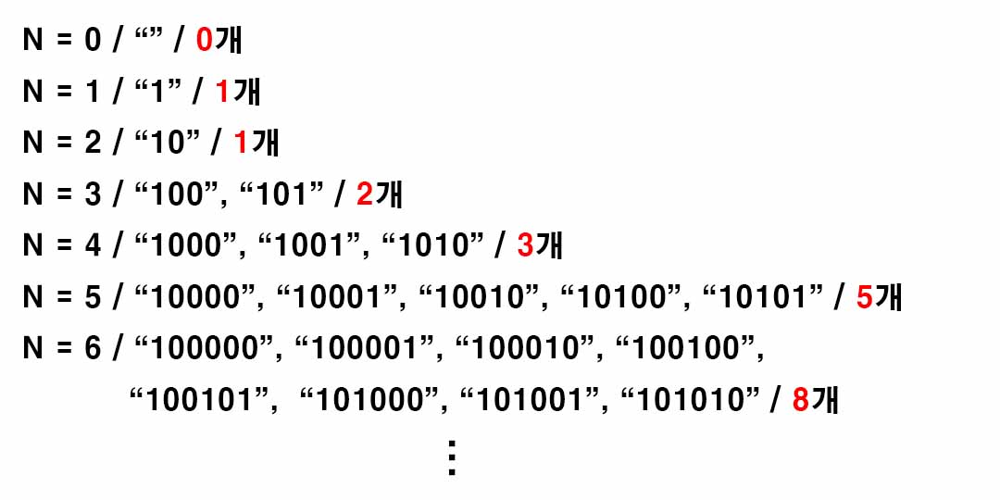

백준 2193. 이친수
- https://www.acmicpc.net/problem/2193
-
문제 :
0과 1로만 이루어진 수를 이진수라 한다. 이러한 이진수 중 특별한 성질을 갖는 것들이 있는데, 이들을 이친수(pinary number)라 한다. 이친수는 다음의 성질을 만족한다.
1. 이친수는 0으로 시작하지 않는다.
2. 이친수에서는 1이 두 번 연속으로 나타나지 않는다. 즉, 11을 부분 문자열로 갖지 않는다.
3. 예를 들면 1, 10, 100, 101, 1000, 1001 등이 이친수가 된다. 하지만 0010101이나 101101은 각각 1, 2번 규칙에 위배되므로 이친수가 아니다.
N(1 ≤ N ≤ 90)이 주어졌을 때, N자리 이친수의 개수를 구하는 프로그램을 작성하시오. -
입력 :
첫째 줄에 N이 주어진다. -
출력 :
첫째 줄에 N자리 이친수의 개수를 출력한다. -
풀이 :
N = 1일 때 이진수는 "0", "1"이다. 하지만 이친수는 "0"으로 시작하지 않기 때문에 이친수는 "1" 하나다.
N = 1일 때의 이친수를 이용해 N = 2일 때의 이친수를 만들기로 하였다.
이친수에서 1이 두번 연속으로 나타나면 안되므로 N = 2일 때의 이친수는 "10" 하나다.
동일하게 N = 2일 때의 이친수를 이용해 N = 3일 때의 이친수를 만들기로 하였다.
"10"은 뒤에 "0"으로 끝나므로 "1", "0" 둘 다 붙을 수 있다.
때문에 N = 3일 때 이친수는 "101", "100" 둘이다.
이런 식으로 "1"으로 끝나는 이친수에는 "0"을 붙혀 이친수 하나를 만들고 "0"으로 끝나는 이친수에는 "1", "0" 둘 다 붙혀 이친수 둘을 만든다.

그 과정에서 이친수의 개수가 피보나치 수와 같다는 점을 발견할 수 있다.
N의 범위가 1이상 90이하이므로 [백준 2745. 피보나치 수 2]와 동일한 코드를 사용한다.